To demonstrate the working of a Singly Linked List (SLL), which includes its creation, traversal , insertion of elements, deletion of elements, and search for elements through visualization.
Aim
Theory & Applications
A Singly Linked List (SLL) is a linear data structure consisting of nodes in which each node is accessible through pointer stored in its immediate predecessor. Single linked list is traversed from first node to the last node using pointers in the forward direction only. It is not feasible to randomly access any element in the list. The first node is pointed by head node which contains the address of first node. Initially, head is Null (∅) indicating empty linked list.
In a Singly Linked List, each node contains two components:
-
Data :
This stores the actual value or information (e.g., an integer, string, object, etc.).
Example: 5, "Hello", {name: "Alice", age: 30}, etc.-
Pointer (or Next):
This holds the reference or address of the next node in the list. If it's the last node, the pointer is set to null (or None in Python).
Applications of Singly Linked List:
- Memory Allocation by the Operating System :
- Use-case :
- Explanation :
- Application :
Operating Systems and memory managers.
Singly linked lists are used to keep track of free and allocated memory blocks in heap management. Each memory block contains a pointer to the next block
Efficient insertion and deletion of memory blocks.
- Undo Functionality in Applications
- Use-case :
- Explanation :
- Application :
Text editors like Microsoft Word, Google Docs.
Each action (e.g., typing a letter) is stored as a node. Pressing "undo" traverses back through the actions using the links.
Enables efficient rollback of previous operations.
- Web Browser Forward Navigation
- Use-case :
- Explanation :
- Application :
Web browsers.
While back navigation uses a stack, forward navigation (redoing pages) can be managed using a singly linked list.
Allows efficient forward traversal through visited pages.
- Polynomial Arithmetic
- Use-case :
- Explanation :
- Application :
Scientific and Engineering computations.
Polynomials can be represented as a linked list where each node holds a coefficient and exponent.
Enables efficient polynomial addition, subtraction, and multiplication without memory waste.
- Real-time Task Scheduling
- Use-case :
- Explanation :
- Application :
Embedded systems and OS kernels.
A task queue can be implemented as a singly linked list where each task is a node.
Easy insertion of new tasks and deletion of completed ones in linear time.
Key Operations On SLL
This section illustrates key operations on a singly linked list, including insertions and deletions at indices 0, 3, and 4. The operations are demonstrated using an initial linked list with four nodes: Node A, Node B, Node C, and Node D.
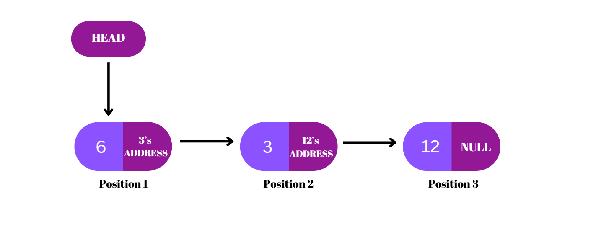
Insertion
Insertion in a singly linked list involves creating a new node and adjusting pointers to place it at the desired position without disrupting the structure of the list.
Insertion Before the First Node:
- Create a new node (Node D).
- Set Node D’s next pointer to the current head (Node A).
- Update the head to point to Node D.
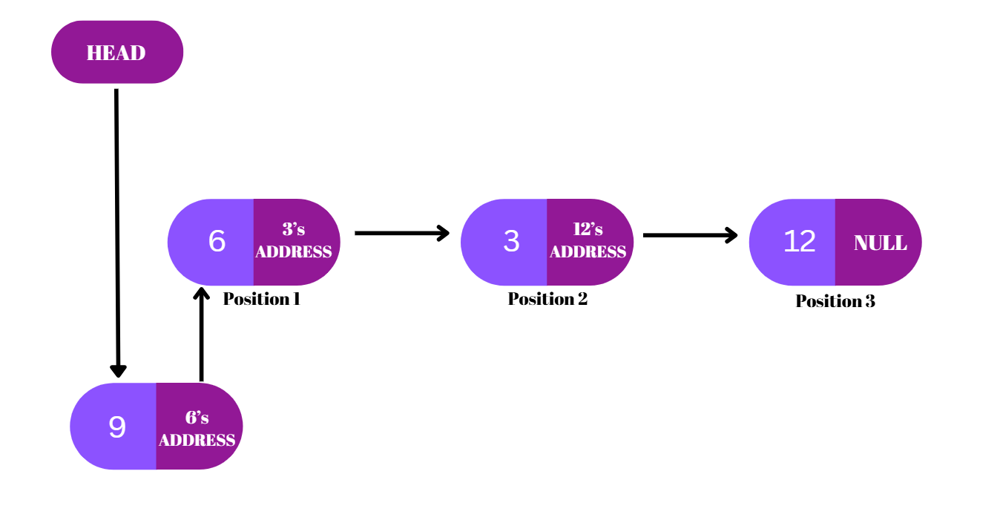
Result:
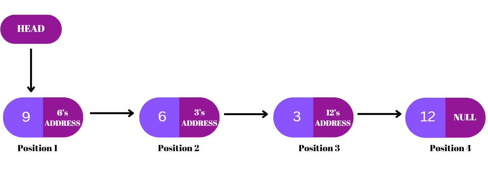Time Complexity:
O(1) – Direct pointer reassignment makes this a constant-time operation.
Insertion at third position
- Create a new node (Node D).
- Traverse the list to the node before the desired position (Node B).
- Set Node D’s next pointer to the next node (Node C).
- Update Node B’s next pointer to point to Node D.
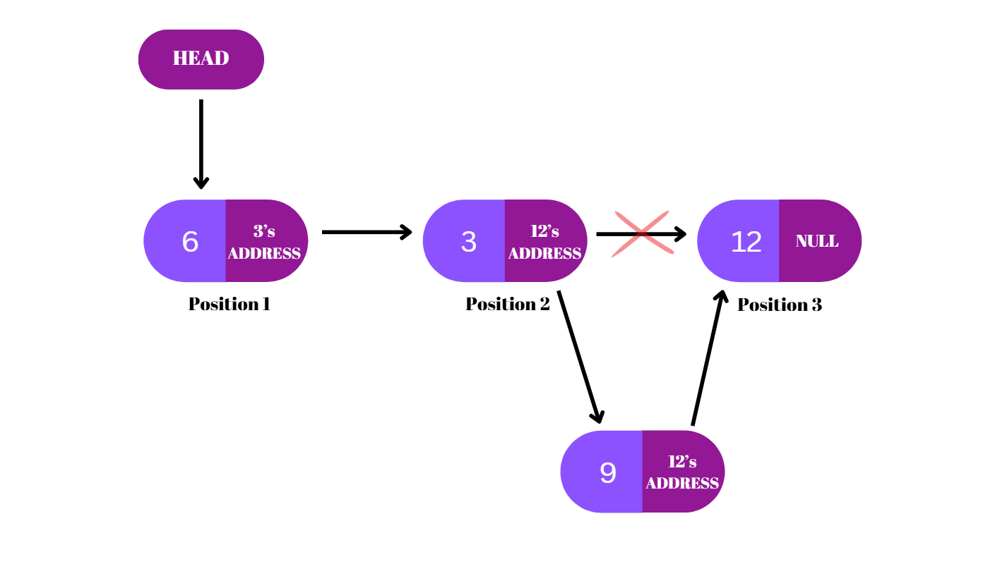
Result:
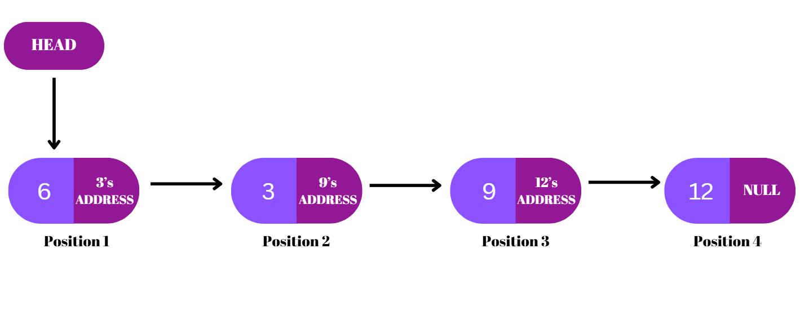Time Complexity:
O(n) – Requires traversal to the desired position.
Insertion at the end of the list
- Create a new node (Node D).
- Traverse the list to the last node (Node C).
- Set Node C’s next pointer to Node D.
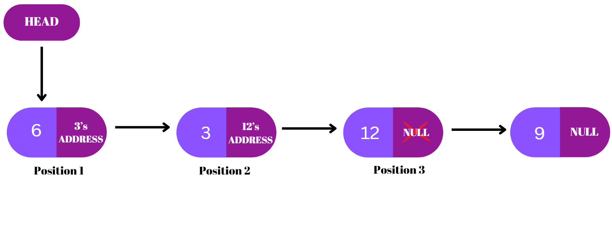
Result:
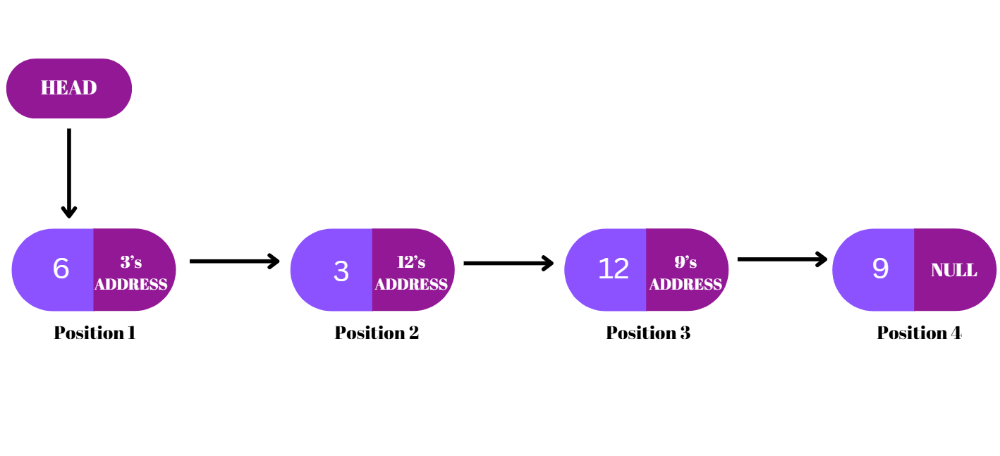Time Complexity:
O(n) – Entire list traversal is needed to reach the last node.
Deletion
Deletion in a singly linked list involves removing a node from the desired position by adjusting the pointers of the preceding node, ensuring the continuity of the list structure.
Deletion at position one
- Identify the head node (Node A).
- Update the head to point to the second node (Node B).
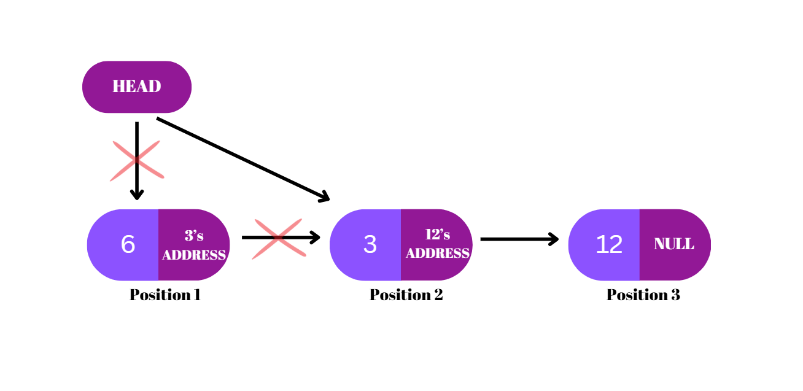
Result:
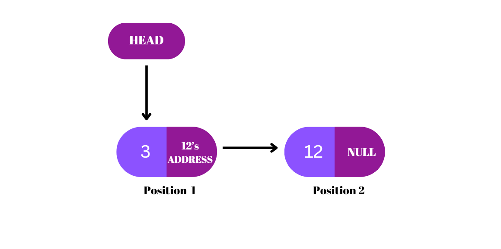Time Complexity:
O(1) – Only the head pointer is changed.
Deletion at third position
- Traverse the list to the node before the one to delete (Node B).
- Update Node B’s next pointer to skip Node C and point to Node D.
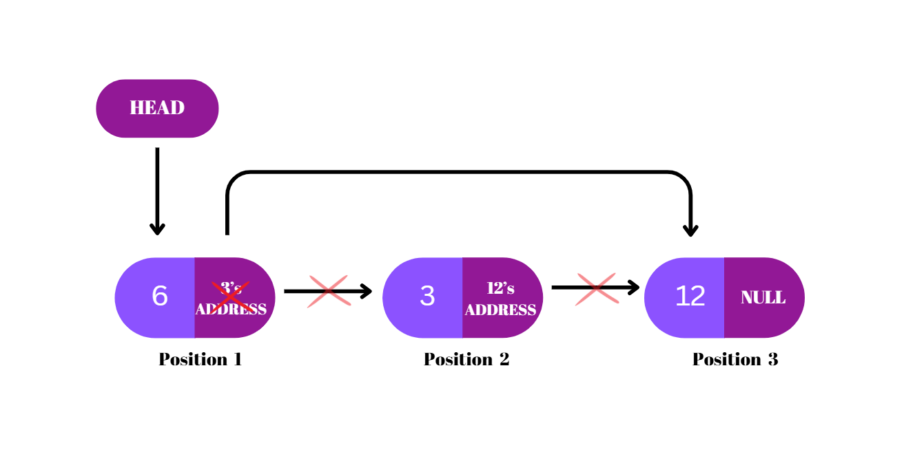
Result:
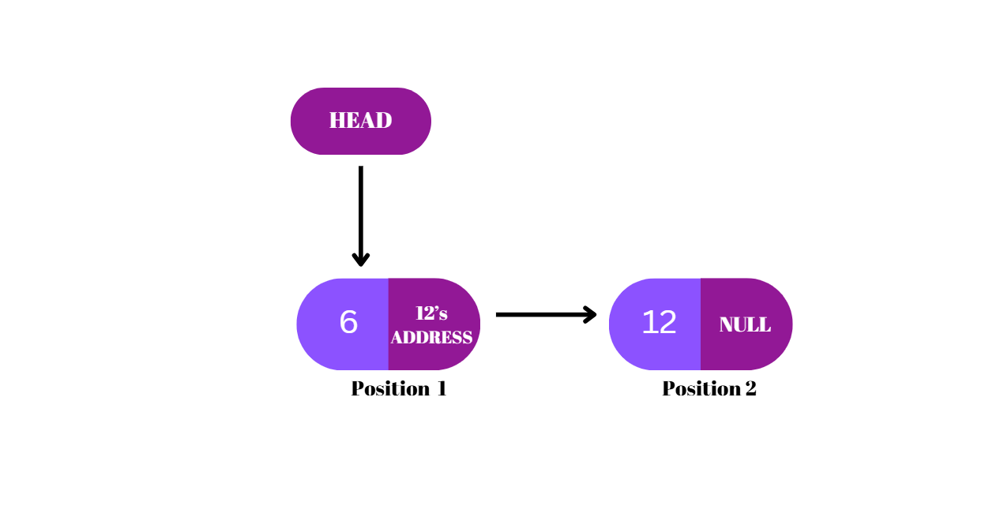Time Complexity:
O(n) – Traversal is needed to reach the node before the one to be deleted.
Deletion at the end of the list
- Traverse the list to find the second-to-last node (Node C).
- Set Node C’s next pointer to
NULL, disconnecting Node D.
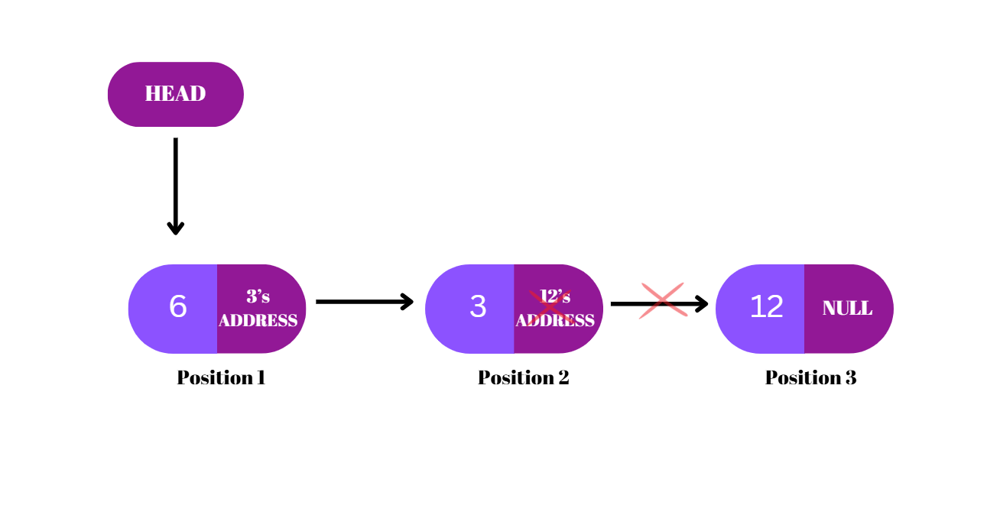
Result:
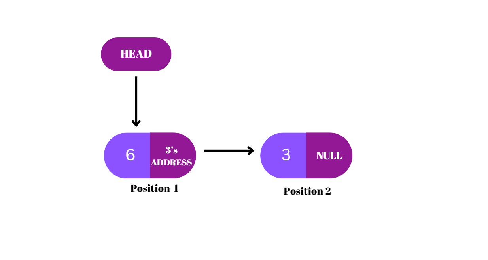Time Complexity:
O(n) – Requires traversal to the end of the list.
Code
Example programs
#C++ code
#include <iostream>
using namespace std;
// Node class
class Node {
private:
int data;
Node* next;
public:
Node(int value) { // Constructor to initialize a node
data = value;
next = nullptr;
}
friend class SinglyLinkedList;
};
// Singly Linked List class
class SinglyLinkedList {
private:
Node* head; // Pointer to the first node
public:
// Constructor
SinglyLinkedList() {
head = nullptr;
}
// Insert at the start
void insertAtStart(int value) {
Node* newNode = new Node(value);
newNode->next = head;
head = newNode;
}
// Insert at the end
void insertAtEnd(int value) {
Node* newNode = new Node(value);
if (!head) { // If the list is empty
head = newNode;
return;
}
Node* temp = head;
while (temp->next) {
temp = temp->next;
}
temp->next = newNode;
}
// Insert in the middle (after a given value)
void insertAfter(int target, int value) {
Node* temp = head;
while (temp && temp->data != target) {
temp = temp->next;
}
if (temp) { // If the target node is found
Node* newNode = new Node(value);
newNode->next = temp->next;
temp->next = newNode;
} else {
cout << "Target value not found!\n" ; } } // Delete at the start void deleteAtStart() { if (!head) { // If
the list is empty cout << "List is empty!\n" ; return; } Node* temp=head; head=head->next;
delete temp;
}
// Delete at the end
void deleteAtEnd() {
if (!head) { // If the list is empty
cout << "List is empty!\n" ; return; } if (!head->next) { // If there is only one node
delete head;
head = nullptr;
return;
}
Node* temp = head;
while (temp->next->next) {
temp = temp->next;
}
delete temp->next;
temp->next = nullptr;
}
// Delete in the middle (specific value)
void deleteValue(int value) {
if (!head) { // If the list is empty
cout << "List is empty!\n" ; return; } if (head->data == value) { // If the value is at the start
Node* temp = head;
head = head->next;
delete temp;
return;
}
Node* temp = head;
while (temp->next && temp->next->data != value) {
temp = temp->next;
}
if (temp->next) { // If the value is found
Node* toDelete = temp->next;
temp->next = temp->next->next;
delete toDelete;
} else {
cout << "Value not found!\n" ; } } // Search for a value bool search(int value) { Node* temp=head;
while (temp) { if (temp->data == value) {
return true;
}
temp = temp->next;
}
return false;
}
// Display the list
void display() {
Node* temp = head;
while (temp) {
cout << temp->data << " -> " ; temp=temp->next;
}
cout << "NULL\n" ; } // Destructor to free memory ~SinglyLinkedList() { Node* temp; while
(head) { temp=head; head=head->next;
delete temp;
}
}
};
int main() {
SinglyLinkedList list;
// Test insertion
list.insertAtStart(10);
list.insertAtStart(20);
list.insertAtEnd(30);
list.insertAfter(10, 25);
cout << "List after insertions: " ; list.display(); // Test deletion list.deleteAtStart();
cout << "List after deleting at start: " ; list.display(); list.deleteAtEnd(); cout
<< "List after deleting at end: " ; list.display(); list.deleteValue(25); cout
<< "List after deleting value 25: " ; list.display(); // Test search cout
<< "Searching for 10: " << (list.search(10) ? "Found" : "Not Found" ) << "\n" ; cout
<< "Searching for 40: " << (list.search(40) ? "Found" : "Not Found" ) << "\n" ; return 0;
}
# Python
class Node:
"""A class representing a node in a singly linked list."""
def __init__(self, data):
self.data = data
self.next = None
class SinglyLinkedList:
"""A class representing a singly linked list."""
def __init__(self):
self.head = None
def insert_at_start(self, data):
"""Insert a new node at the start of the list."""
new_node = Node(data)
new_node.next = self.head
self.head = new_node
def insert_at_end(self, data):
"""Insert a new node at the end of the list."""
new_node = Node(data)
if not self.head:
self.head = new_node
return
current = self.head
while current.next:
current = current.next
current.next = new_node
def insert_after(self, target, data):
"""Insert a new node after a specific node value."""
current = self.head
while current and current.data != target:
current = current.next
if current:
new_node = Node(data)
new_node.next = current.next
current.next = new_node
else:
print("Target value not found!")
def delete_at_start(self):
"""Delete the node at the start of the list."""
if not self.head:
print("List is empty!")
return
self.head = self.head.next
def delete_at_end(self):
"""Delete the node at the end of the list."""
if not self.head:
print("List is empty!")
return
if not self.head.next:
self.head = None
return
current = self.head
while current.next and current.next.next:
current = current.next
current.next = None
def delete_value(self, value):
"""Delete the first node with the given value."""
if not self.head:
print("List is empty!")
return
if self.head.data == value:
self.head = self.head.next
return
current = self.head
while current.next and current.next.data != value:
current = current.next
if current.next:
current.next = current.next.next
else:
print("Value not found!")
def search(self, value):
"""Search for a node with the given value."""
current = self.head
while current:
if current.data == value:
return True
current = current.next
return False
def display(self):
"""Display the linked list."""
current = self.head
while current:
print(current.data, end=" -> ")
current = current.next
print("NULL")
# Example usage
if __name__ == "__main__":
linked_list = SinglyLinkedList()
# Test insertion
linked_list.insert_at_start(10)
linked_list.insert_at_start(20)
linked_list.insert_at_end(30)
linked_list.insert_after(10, 25)
print("List after insertions:")
linked_list.display()
# Test deletion
linked_list.delete_at_start()
print("List after deleting at start:")
linked_list.display()
linked_list.delete_at_end()
print("List after deleting at end:")
linked_list.display()
linked_list.delete_value(25)
print("List after deleting value 25:")
linked_list.display()
# Test search
print("Searching for 10:", "Found" if linked_list.search(10) else "Not Found")
print("Searching for 40:", "Found" if linked_list.search(40) else "Not Found")
Practice
This section demonstrates the basic operations like insert, delete, and search operations thru visual-rich simulation . Follow the given steps for practicing:
- Enter comma-separated values (up to maximum 8 values) and click on "Create List" to generate the linked list.
- Choose an operation—Insert, Delete, or Search—and provide the necessary input (like value and position).
- Click "Run Simulation" to see the animated visuals, preforming the desired operation step- by-step
Singly Linked List Visualization
Result
The designed virtual lab (VLab) demonstrated the implementation of a singly linked list with a maximum of eight elements in an interactive way. It successfully allowed users to perform key operations such as insertion, deletion, and search, visually showcasing the step-by-step pointer adjustments involved in each operation and reinforcing the underlying logic of linked list manipulation.
Quiz
Question
üìúSummary
References
Team & Tools
Students
- Rishik Chaudhary ,3rd year, BSc(Hons) Computer Science (2024-25)
- Keshav Khari, 3rd year, BSc(Hons) Computer Science (2024-25)
Mentors
- Ms. Priyanka Sharma
- Prof. Sharanjit Kaur
Tools Used
- HTML(v5.2), CSS Snapshot 2023, JavaScript (ES 6)
- Figma(v124.4.7), Canva